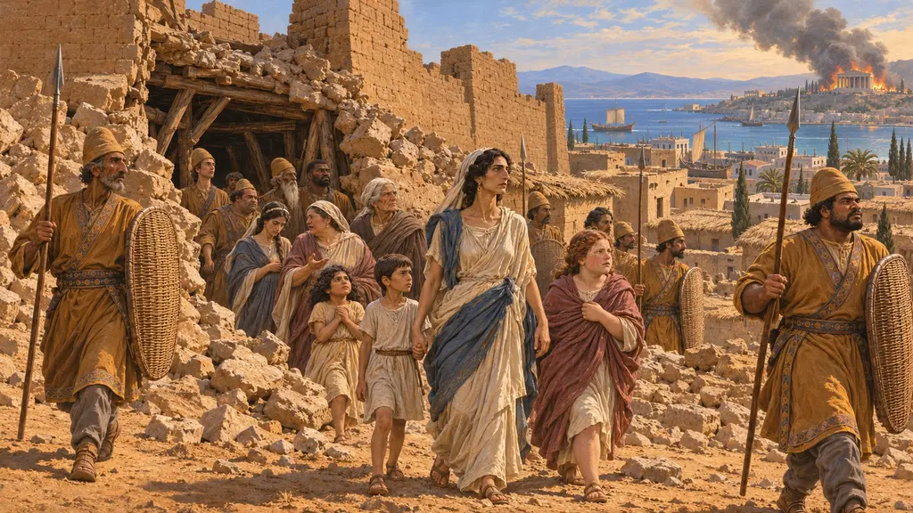
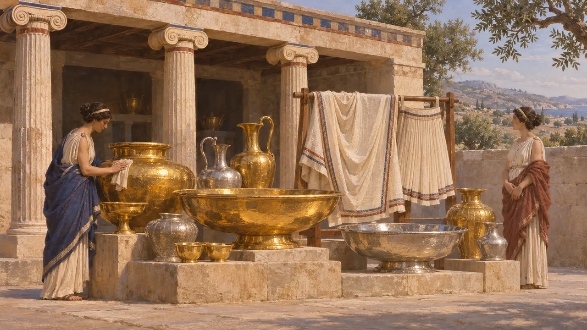
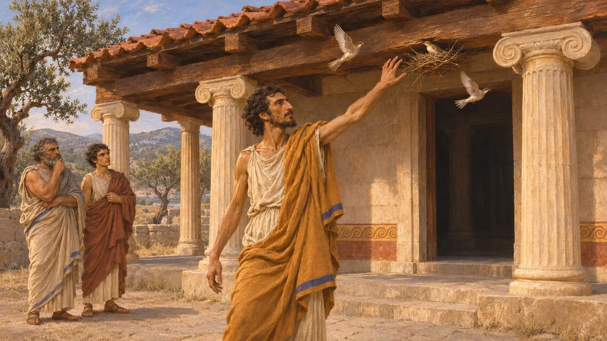
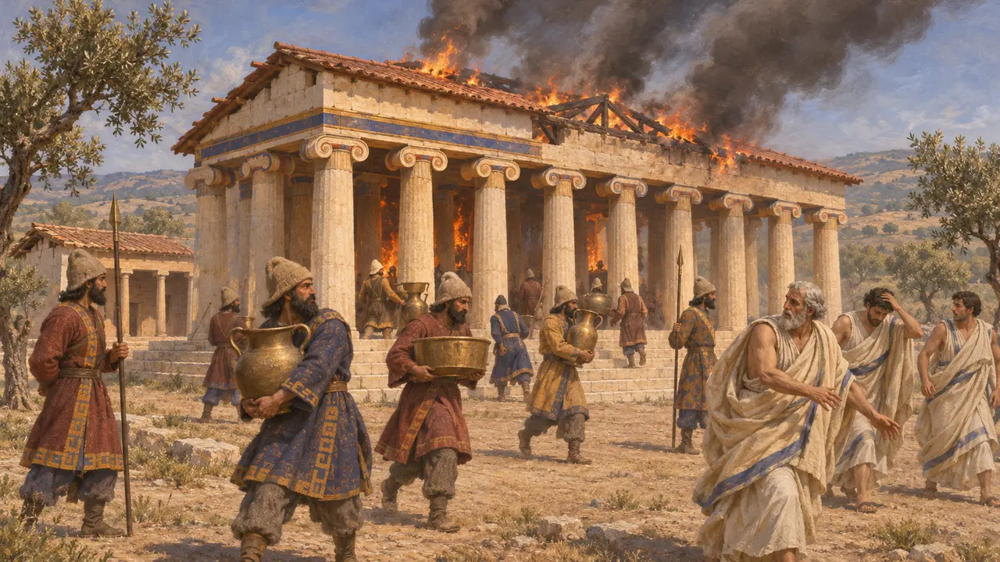
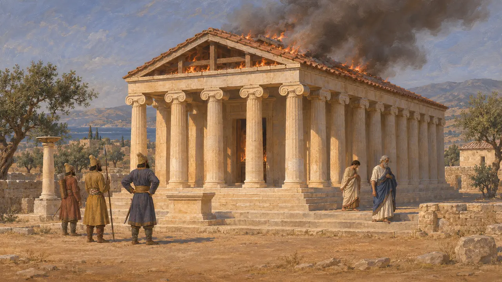
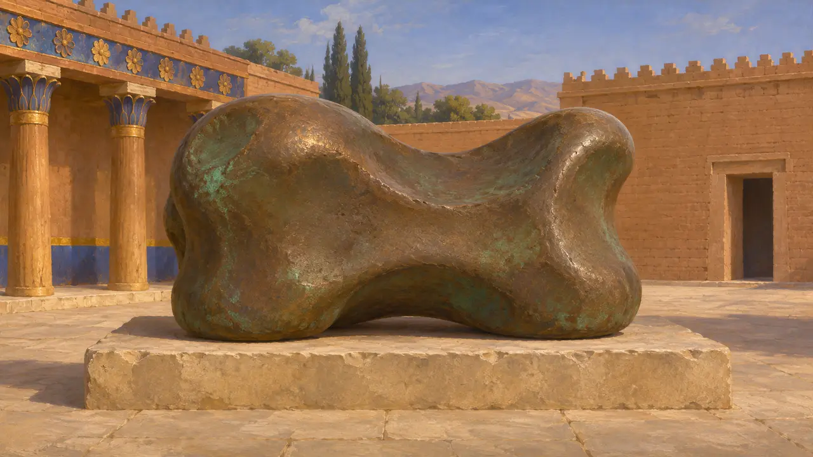

Didyma
The oracle of Apollo south of Miletus, kept by the Branchidae, burned in 494 BCE
در بازی: مرحلهٔ ۷: سارد میسوزد
Didyma was the great sanctuary and oracle of Apollo in the territory of Miletus, about 16 km south of the city, kept by a priestly family called the Branchidae. Kings sent it rich gifts. When the Persians took Miletus in 494 BCE, Herodotus says, they plundered and burned it. The huge temple that stands there now was begun long after.
در بازی: The Sardis Burns level's news of Miletus's fall and its chatter tell of the shrine at Didyma burning. It is not a building in the game and has no mechanic of its own.

Gifts of kings
روایت باستانیHerodotus says Croesus sent offerings to the Branchidae equal in weight and kind to his gifts at Delphi. The pharaoh Necho dedicated there the clothes he had worn in his victories. In 499 BCE Hecataeus urged the rebels to pay for a fleet with Croesus's treasures in the shrine, but he was not heeded.
Herodotus 1.92, 2.159, 5.36

The oracle and the suppliant
روایت باستانیWhen the Lydian rebel Pactyes fled to Cyme, its people asked the oracle at Didyma whether to hand him to the Persians. Herodotus says the god twice told them to, and that a citizen named Aristodicus drove the birds from the temple, to be rebuked by a voice from the shrine.
Herodotus 1.157-159


Who burned it, and when
مورد مناقشهStrabo, writing much later, says Xerxes burned Didyma in 479 BCE and that the Branchidae betrayed its treasures and went east with him. Herodotus puts the burning in 494 BCE, after Miletus fell. Excavation shows destruction of the archaic temple but cannot settle the date or which story is right.
Strabo 14.1.5; Herodotus 6.19

A knucklebone at Susa
در اسنادA large bronze knucklebone weight found at Susa carries a Greek dedication to Apollo. Most scholars think it was carried off from Didyma as plunder. If so, it is a rare physical trace of the spoils Herodotus says the Persians took from the shrine.
Bronze astragal from the Susa excavations (J. de Morgan), Louvre
منابع
- Herodotus 1.92
- Herodotus 1.157-159
- Herodotus 2.159
- Herodotus 5.36
- Herodotus 6.18-20
- Strabo 14.1.5
- Bronze astragal from the Susa excavations (J. de Morgan), Louvre